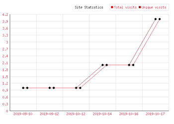
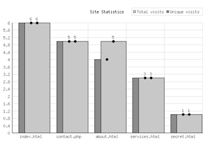
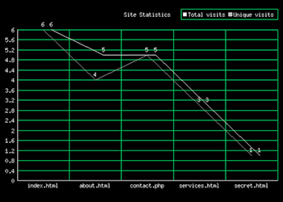
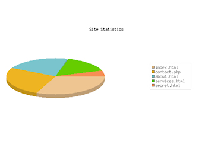

Download demo version (save disabled)
Site Statistics Extension
Requirements:
WYSIWYG Web Builder 15.1 or higher
Site Statistics Extension
Requirements:
WYSIWYG Web Builder 15.1 or higher

Site Statistics
This extension keeps track of all visits and unique visitors per page. The statistics will be stored in a MySQL database.
Features
• Supports 3 modes: Text, Image, Invisible.
• 25 image styles are included (scalable).
• Keep track of total and unique visits.
• Ignores visits of search bots.
• For each visit the date, IP address and user agent will be stored.
• Built-in chart (lines, bars, or pie) to display the statistics in a chart image. This image can be used anywhere in your website.
• Many text styles options: font, shadow, background, border, padding etc.
Note:
This extension stores the date, IP address and user agent data (browser) of the visitor. If the website has many visitors then a lot of data will be generated, so you will need a large database. Alternatively, you can use the ‘Visit Counter’ extension, although this does not have a built-in chart option.
This extension keeps track of all visits and unique visitors per page. The statistics will be stored in a MySQL database.
Features
• Supports 3 modes: Text, Image, Invisible.
• 25 image styles are included (scalable).
• Keep track of total and unique visits.
• Ignores visits of search bots.
• For each visit the date, IP address and user agent will be stored.
• Built-in chart (lines, bars, or pie) to display the statistics in a chart image. This image can be used anywhere in your website.
• Many text styles options: font, shadow, background, border, padding etc.
Note:
This extension stores the date, IP address and user agent data (browser) of the visitor. If the website has many visitors then a lot of data will be generated, so you will need a large database. Alternatively, you can use the ‘Visit Counter’ extension, although this does not have a built-in chart option.

Buy full version via 2checkout for $7.95
https://secure.2checkout.com/order/checkout.php?PRODS=26964414
https://secure.2checkout.com/order/checkout.php?PRODS=26964414




Also available
Visit Counter
Download counter
Visit Counter
Download counter